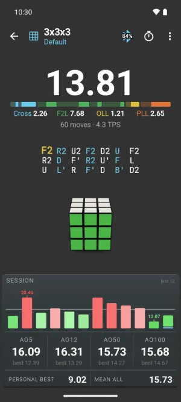
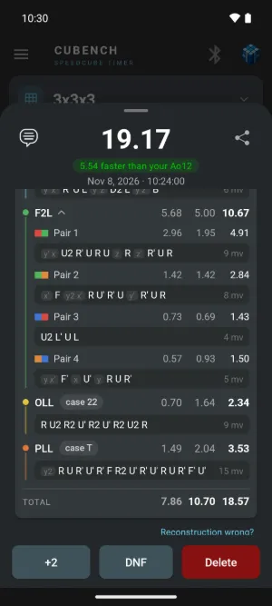
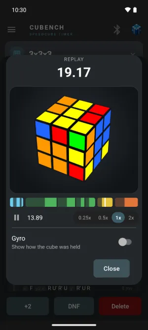
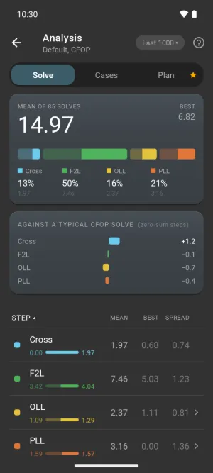
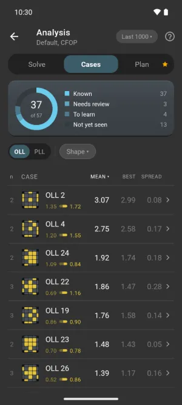
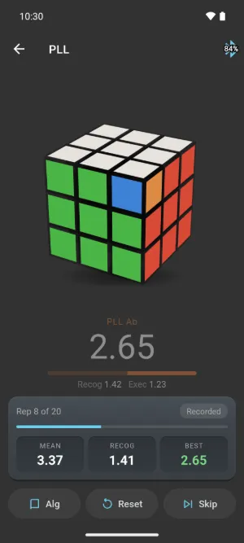
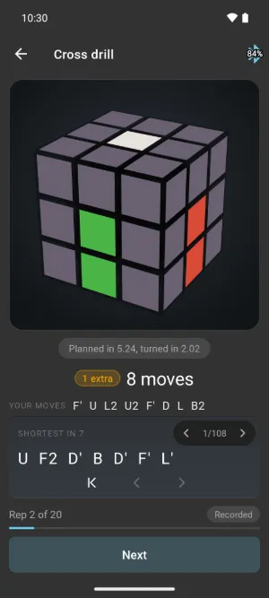
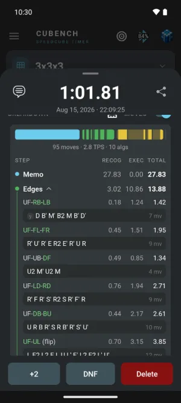

Press kit
Everything you need to write about Cubench or show it in a video. Use any of it freely.
Download everything (zip, 1.5 MB)
Facts
- Name: Cubench (formerly Nano Timer)
- What: speedcubing timer and smart cube app for Android
- Smart cubes: GAN, MoYu and QiYi
- Price: free, no ads, no account. An optional coach is in free beta.
- On Google Play since: 2014
- License: open source, GPL v3
- Made by: Nicolas Aubinet
- Contact: contact@cubench.app
Short description
Long description
App icon

Demo video
47 seconds, 720 x 1280 MP4, no sound. Also on YouTube, with an end card: embed or link that one.
Screenshots
1080 x 2400 PNG. Times in the Analysis screens come from a sample data set.


Timer, after a solve

Solve breakdown

3D replay

Analysis, steps

Analysis, cases

PLL drill

Cross drill

Blind solve